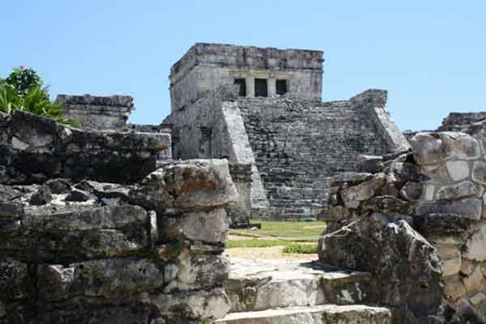
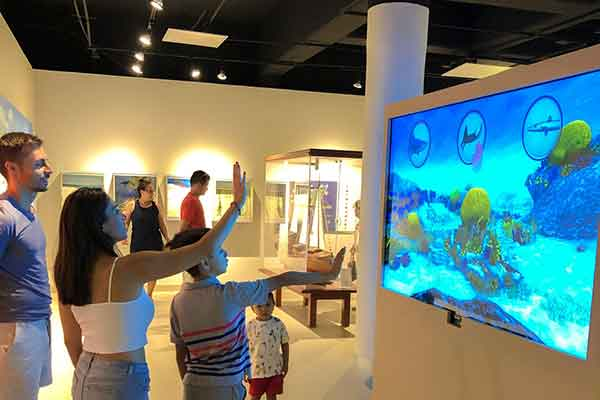
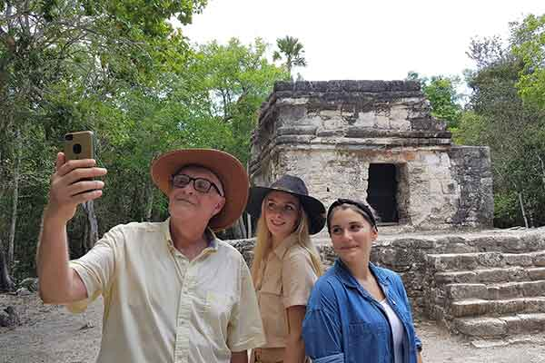
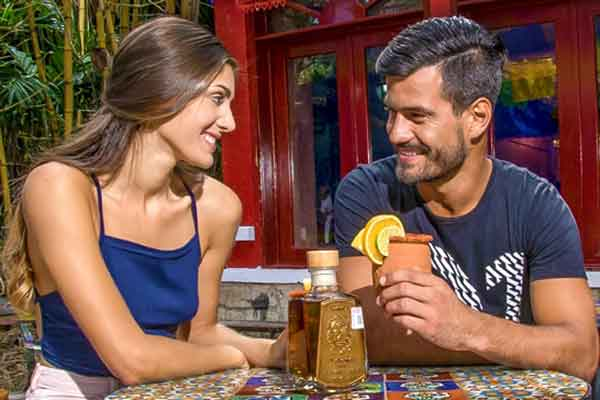
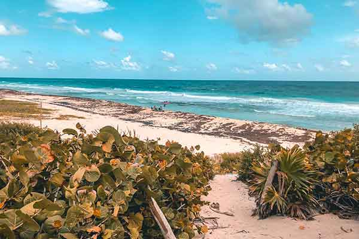

Find Your Next Adventure
History of Cozumel
Cozumel is rich in both native and Spanish history. More than 2000 years ago the indigenous Maya migrated
from the mainland to the island. There, they set up a profitable trading district, as well as a temple
dedicated solely to the jaguar goddess, Ixchel (pronounced ee-shel).
In the 16th century, waves of Spanish invaders slowly reduced little Cozumel’s small Mayan population
through war and disease. By 1600, the few remaining Mayans drifted away to their surrounding
territories, and the island was left uninhabited.
Later, pirates found opportunity in the island’s newfound privacy.
Learn more...
Fun Facts
- Cozumel is located in Mexico off the coast of the Yucatan Peninsula and just south of Cancun and has a total landmass of just 184 square miles.
- Cozumel, an island in Mexico’s Yucatan Peninsula, is one of North America’s major scuba diving hotspots.
- Cozumel is home to some beautiful beaches, including Playa Bonita, Playa El Mirador and Playa de San Martin.
- Cozumel is also home to a small section of the world’s second largest barrier reef system, known as the Mesoamerican Reef.
Learn more...
Punta Sur Eco Park
A natural state reserve with over 1,000 hectares filled with a wide variety of flora, fauna and
lagoon systems. Its the ideal place for nature lovers. With its white sandy beaches, turquoise
waters and numerous sea fan gardens that extend through out the reef.
Learn more...
Cozumel Museum
In its 11 interactive exhibits discover in a playful, informed and entertaining way, the origin,
natural diversity and resilience of its inhabitants. There are also 2 Temporary Exhibit rooms
for
local and international artists and a special room that pays tribute to 146 years of Carnaval
tradition.
Learn more...
San Gervasio

This archaeological set has been considered the center of pilgrimages where the Mayan worshiped
the
Goddess “Ixchel”. Besides being a Mayan sacred center it was a strategic site for commerce and
the
politic development of the area.
Learn more...
Chankanaab

Located inside Cozumel´s National Reef Marine Park. Enjoy our beautiful beach and snorkel or
scuba
dive the most beautiful reefs on the island. Plenty of amenities to choose from:
Learn more...
Playa Punta Chiqueros

The most unspoiled and beautiful beach on Cozumel. Endless white sand and at times massive
waves. Not the best for swimming but perfect to sit, back, relax and have the beach for
yourself. Visiting Playa Punto Chiqueros to me is one of the best things to do when renting a
scooter in Cozumel.
Learn
more...